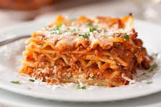

Lasagna

Description
Lasagna is a classic Italian dish made with layers of pasta, meat sauce, and cheese.
It's a hearty and comforting meal that's perfect for feeding a crowd.
This recipe is easy to make and can be customized with your favorite ingredients.
It with a side salad and garlic bread for a delicious and satisfying dinner.
Ingredients
- 1 pound ground beef
- 1 onion, chopped
- 2 cloves garlic, minced
- 1 (28 ounce) can tomato sauce
- 1 (6 ounce) can tomato paste
- 1 1/2 teaspoons salt
- 1 teaspoon dried oregano
- 1 (12 ounce) package lasagna noodles
- 12 ounces ricotta cheese
- 1 egg
- 3/4 cup grated Parmesan cheese
- 2 cups shredded mozzarella cheese
Instructions
- In a large skillet over medium heat, cook the ground beef, onion, and garlic until brown.
- Add the tomato sauce, tomato paste, salt, and oregano and simmer for 15 to 20 minutes.
- Preheat the oven to 375 degrees F (190 degrees C).
- Bring a large pot of lightly salted water to a boil. Cook the lasagna noodles in boiling water for 8 to 10 minutes.
- Drain noodles and rinse with cold water. In a mixing bowl, combine ricotta cheese with egg, remaining salt, and Parmesan cheese.
- To assemble, spread 1 1/2 cups of meat sauce in the bottom of a 9x13-inch baking dish.
- Arrange 6 noodles lengthwise over meat sauce. Spread with one-half of the ricotta cheese mixture.
- Top with a third of mozzarella cheese. Repeat layers and top with remaining mozzarella cheese.
- Cover with foil: to prevent sticking, either spray foil with cooking spray, or make sure the foil does not touch the cheese.
- Bake in preheated oven for 25 minutes. Remove foil, and bake an additional 25 minutes.
- Cool for 15 minutes before serving.